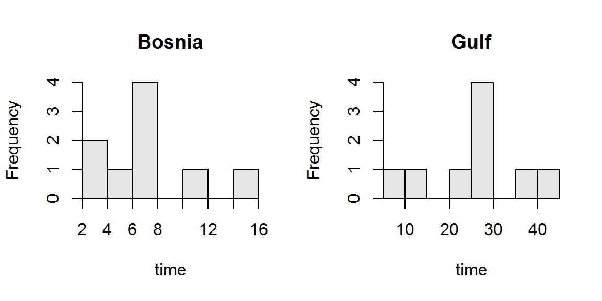

Cholesterol Drug Treatments I
-
α = 0.05.
-
HA: μb-μl ≠ 0 and H0: μb-μl = 0, where μ is the mean decrease in LDL of a male, b is the Befizal drug, and l is the Lipanthyl drug.
-
2-sample t-test because (i) two populations/groups are considered (Befizal and Lipanthyl drugs), (ii) a quantitative variable (decrease in LDL level) was recorded, and (iii) the samples are independent (there is no known connection between all pairs of male subjects in the two drug treatments).
-
An experimental study with random allocation (placement of subjects into the treatments) but no obvious random selection (men did not appear to be randomly selected for the experiment).
-
The assumptions are met because (i) the samples are independent (as described above), (ii) nb+nl = 13+12 = 25 > 15 and the two sample distributions (shown on the handout) are not obviously strongly skewed (though it is difficult to actually see that because the sample sizes are small), and (iii) the variances appear to be equal (Levene’s p-value = 0.8315 > α).
-
x̄b-x̄h = 0.278-0.356 = -0.078.
-
t = -1.4855 with 23 df.
-
p-value0.1510.
-
Do not reject H0 because the p-value < α.
-
It appears that the mean decrease in LDL is not significantly different between the two drug treatments. These data do not provide a significant indication about which drug is more likely to reduce the mean LDL level in men with high cholesterol.
-
I am 95% confident that the mean decrease in LDL is between 0.187 lower and 0.031 higher for men given Befizal as compared to men give Lipanthyl. [Note that the ambiguousness of this statement is consistent with not rejection the H0.]
R Appendix.
xbar1 <- 0.278; s1 <- 0.134; n1 <- 13
xbar2 <- 0.356; s2 <- 0.128; n2 <- 12
df <- n1+n2-2
sp2 <- ((n1-1)*(s1^2)+(n2-1)*(s2^2))/df
se <- sqrt(sp2*(1/n1+1/n2))
stat <- xbar1-xbar2
t <- stat/se
pv <- 2*distrib(t,distrib="t",df=df)
tstar <- distrib(0.975,type="q",distrib="t",df=df)
ci <- stat+c(-1,1)*tstar*se
Cholesterol Drug Treatments I
> d <- read.csv("https://raw.githubusercontent.com/droglenc/NCData/master/Cholesterol2.csv")
> d$decrease <- d$before-d$after
> levenesTest(decrease~tx,data=d)
Levene's Test for Homogeneity of Variance (center = median)
Df F value Pr(>F)
group 1 0.0463 0.8315
23
> t.test(decrease~tx,data=d,var.equal=TRUE)
Two Sample t-test with decrease by tx
t = -1.4885, df = 23, p-value = 0.1502
alternative hypothesis: true difference in means is not equal to 0
95 percent confidence interval:
-0.18673806 0.03045601
sample estimates:
mean in group Befizal mean in group Lipanthyl
0.2776923 0.3558333
Compost Type and Germination Rates
-
α = 0.10.
-
HA: μb-μh > 0 and H0: μb-μh = 0, where μ is the mean number of germinated plants, b is the bought compost, and h is the homemade compost.
-
2-sample t-test because (i) two populations/groups are considered (bought and homemade compost), (ii) a quantitative variable (number germinated) was recorded, and (iii) the samples are independent (there is no known connection between all pairs of bought and homemade individuals).
-
An experimental study with some randomization (placement of containers in the greenhouse).
-
The assumptions are met because (i) the samples are independent (as described above), (ii) nb+nh = 18+10 = 28 > 15 and the two sample distributions (shown on the handout) are not obviously strongly skewed, and (iii) the variances appear to be equal (Levene’s p-value = 0.2414 > α).
-
x̄b-x̄h = 42.67-28.9 = 13.77.
-
t = 8.7763 with 26 df.
-
p-value<0.00005.
-
Reject H0 because the p-value < α.
-
It appears that the the number of plants that germinate is significantly lower for the homemade than the bought compost. Thus, the homemade compost “performs” worse than the store bought compost and may lead to increased costs for the greenhouse.
-
I am 90% confident that the number of plants that germinated with the bought compost is at least 11.7 plants greater than the number of plants that germinated with the homemade compost.
R Appendix.
xbar1 <- 42.67; s1 <- 4.33; n1 <- 18
xbar2 <- 28.90; s2 <- 3.21; n2 <- 10
df <- n1+n2-2
sp2 <- ((n1-1)*(s1^2)+(n2-1)*(s2^2))/df
se <- sqrt(sp2*(1/n1+1/n2))
stat <- xbar1-xbar2
t <- stat/se
pv <- distrib(t,distrib="t",df=df,lower.tail=FALSE)
lcb <- stat+distrib(0.9,type="q",distrib="t",df=df,lower.tail=FALSE)*se
Delivering Military Supplies
-
α = 0.05
-
HA: μb-μg < 0 and H0: μb-μg = 0, where μ is the mean time to deliver ALL shipments, b is for Bosnia, and g is for Persian Gulf War.
-
2-sample t-test because (i) two populations/groups are considered (Bosnia and Persian Gulf), (ii) a quantitative variable (delivery time) was recorded, and (iii) the samples are independent (there is no known connection between all deliveries to the two wars).
-
An observational study with clear randomization of the two samples.
-
The assumptions are met because (i) the samples are independent (as described above), (ii) nb+ng = 9+9 = 18 > 15 and the two sample distributions () are not obviously strongly skewed (also told to assume that the distribution are not strongly skewed), and (iii) the variances appear to be equal (Levene’s p-value = \(0.0736\) > α).

Figure 1: Histograms of the delivery times for military supplies in the Bosnian and Persian Gulf war.
-
x̄b-x̄g = 7.16-25.24 = -18.09 (Table 1).
Table 1: Results from the two-sample t-test for testing that the mean delivery time was lower for the Bosnian than the Persian Gulf war.
t = -4.8458, df = 16, p-value = 8.942e-05
95 percent confidence interval:
-Inf -11.57169
sample estimates:
mean in group Bosnia mean in group Gulf
7.155556 25.244444
-
The test statistic is t = -4.846 with 16 df (Table 1).
-
The p-value = 0.0001 (Table 1).
-
The H0 is rejected because the p-value < α (Table 1).
-
The mean delivery time was significantly lower in Bosnia than in the Persian Gulf War. Thus, the new “just-in-time” entality for deliveries appears to have resulted in quicker delivery times.
-
I am 95% confident that the mean delivery time for Bosnia was more than 11.6 days faster than for the Persian Gulf War (Table 1).
R Appendix
del <- data.frame(war=rep(c("Gulf","Bosnia"),each=9),
time=c(28.0,20.0,26.5,10.6,9.1,35.2,29.1,41.2,27.5,
15.1,6.4,5.0,11.4,6.5,6.5,3.0,7.0,3.5))
hist(time~war,data=del)
(del.lev <- levenesTest(time~war,data=del) )
( del.t <- t.test(time~war,data=del,var.equal=TRUE,alt="less") )